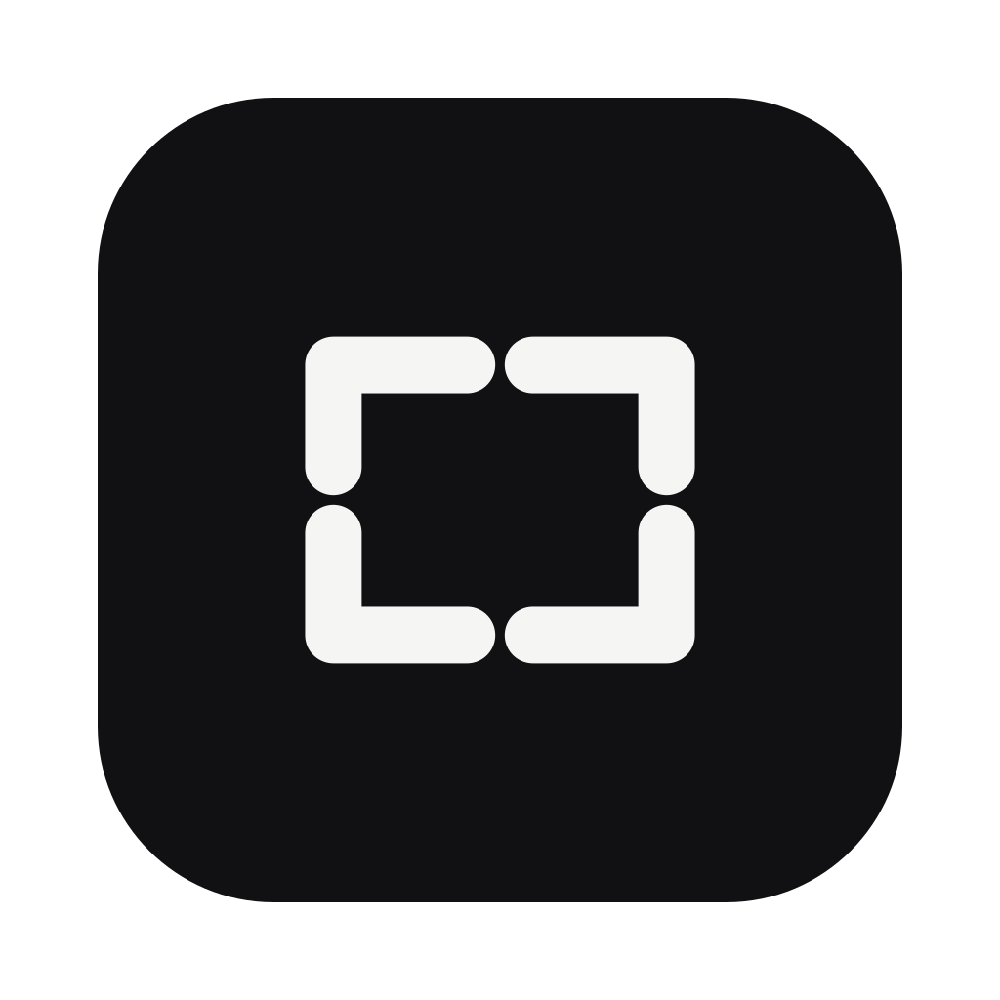

example.com/fitted-sheet?attempt=4
Attempt 04
How to fold a fitted sheet
The corners are not corners. They are opinions. You line one up, the opposite one leaves.

Snapgrok Source⌥⇧G
Snapgrok sits in the menu bar. Chrome is in front, you press the shortcut, and a Grok Bot opens with a picture of the window and a short link to that exact page. Return is left for you.
Attempt 04
The corners are not corners. They are opinions. You line one up, the opposite one leaves.
The page is just sitting there. Snap it.
The front Chrome window, not the whole desktop. The cursor stays out of the picture.
A short link that still opens the page you were on, query string and all. If shortening fails, the full URL goes in.
The bot you picked last is where it lands. Snapgrok stops at the composer.
macOS 14, Google Chrome, and the Grok Bot app. Sign in from the menu bar with the account you already use for Grok Bot, allow Screen & System Audio Recording and Accessibility, then quit and reopen so those grants stick.